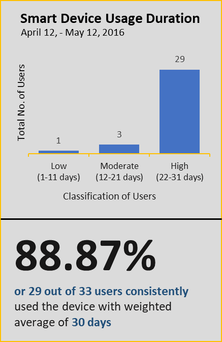
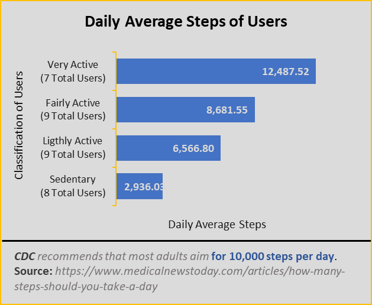
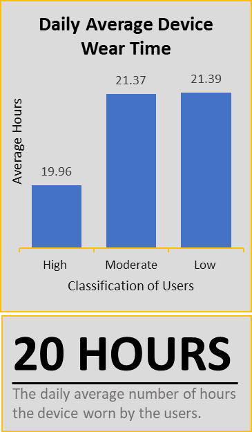
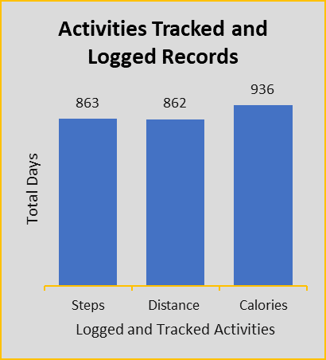
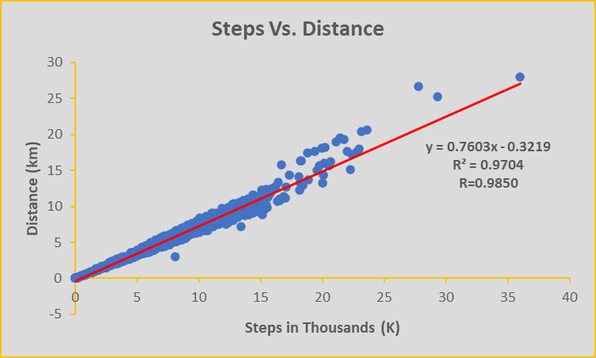

Case Study: How Can a Wellness Technology
Company Play It Smart?
Company Play It Smart?

In this case study, Data Analyst performed many real worlds task of a Junior Data Analyst. They Imagined that they are working for Bellabeat, a high-tech manufacturer of health-focus products for women, and meet different charaters and team members. In order to answer business questions, data analyst followed the steps of the data analysis process Ask, Prepare, Process, Analyze, Share, and Act.
Bellabeat is a successful small company, but they have the potential to become a larger player in the global smart device market. Urška Sršen, cofounder and Chief Creative Officer of Bellabeat, believes that analyzing smart device fitness data could help unlock new growth opportunities for the company. Data Analyst have been asked to focus on one of Bellabeat’s products and analyze smart device data to gain insight into how consumers are using their smart devices. The insights that they discover will then help guide marketing strategy for the company. Data Analyst present their analysis to the Bellabeat executive team along with their high-level recommendations for Bellabeat’s marketing strategy.
Characters
Products
Identify trends on how consumers use Bellabeat smart devices by focusing in one bellabeat product and analyze smart device data to gain insight into how consumers are using their smart devices.
* Find Duplicates Record.
* Find Unique Values.
* Find the missing values (Null Values).
* Find the Typographical Errors.
* Determine the No. of Rows
* Determine the No. of Columns
* Check the date format
Note: Data Cleaning is Iterative Process
| Data Cleaning Process | daily Activity _merged | hourly Steps _merged | sleeps Day _merged | Action Taken |
|---|---|---|---|---|
| No. Duplicates | 0 | 0 | 3 | Removed |
| No. of Unique Values | 33 | 33 | 24 | Retain |
| No. of Missing Values | 0 | 0 | 0 | Retain |
| No. of Typographical Errors | 0 | 0 | 0 | Retain |
| No. of Rows | 940 | 22,099 | 410 | Retain |
| No. Columns | No | No | No | Retain |
| Date Format | Inconsistent | Inconsistent | Inconsistent | Formatted in a single date format |
| daily Activity _merged | No. of Users | No. of Days | Total Days |
|---|---|---|---|
| 1 | 4 | 4 | |
| 1 | 18 | 18 | |
| 1 | 19 | 19 | |
| 1 | 20 | 20 | |
| 2 | 26 | 52 | |
| 1 | 28 | 28 | |
| 2 | 29 | 58 | |
| 3 | 30 | 90 | |
| 21 | 31 | 651 | |
| Total | 33 | 940 | |
| Min. Days Used | 4 | ||
| Max. Days Used | 31 | ||
| Weighted Average Days | 28.49 | ||
Table 2 shows the Number of Days the Device Used. The data was extracted from dailyActivity_merged data. This is used to determine the number of day that the users used the device within 31 days period.
| Days | No. of Users (Frequency) | Percentage | Classification | Weighted Average Days |
|---|---|---|---|---|
| 1 to 11 | 1 | 3.03 | Low | 4 |
| 12 to 21 | 3 | 9.09 | Moderate | 19 |
| 22 to 31 | 29 | 87.88 | High | 30 |
| Total | 33 | 100 |
Table 3 shows the Grouped Days Summary, it was extracted from dailyActivity_merged data. Data Analyst grouped the days to easily identify the pattern and trends of the data.
| Steps | No. of Users (Frequency) | Percentage | Classification |
|---|---|---|---|
| Less than and 5000 | 7 | 21.88 | Sedentary |
| 5001 to 7500 | 9 | 28.13 | Lightly Active |
| 7501 to 10000 | 9 | 28.13 | Fairly Active |
| More than 10000 | 7 | 21.88 | Very Active |
| TOTAL | 32 | 100 |
Table 4 shows the Grouped Steps Based on Average Total Steps of the users. The data was extracted from dailyActivity_merged data. the classification of the steps was based from www.1000steps.org.au.
| Classification of Users | Usage Average Hours |
|---|---|
| High (22 to 31) | 19.96 |
| Moderate (12 to 21) | 21.37 |
| Low (1 to 11) | 21.39 |
Table 5 shows the Average Hours of Daily Device Usage. It was extracted from the dailyActivity_merged data. Data Analyst determined the total number of hours by calculating the four different columns which are SedentaryMinutes, LightlyActiveMinutes, FairlyActiveMinutes, and VeryActiveMinutes then the total was divided into sixty.
| Classification of Users | Logged and Tracked Activity | ||
| Steps | Distance | Calorie | |
|---|---|---|---|
| High (22 to 31) | 804 | 803 | 876 |
| Moderate (12 to 21) | 56 | 56 | 56 |
| Low (1 to 11) | 3 | 3 | 4 |
| Total | 863 | 862 | 936 |
Table 6 shows the Logged and Tracked Activity of the Users. It was extracted from dailyActivity_merged data. Data Analyst determined the logged activity by inspecting the values of TotalSteps, TotalDistance, and Calorie. If the value is 0, it means that the users did not log the activity or the device does not track the activity.

{kind=link}
Figure 1 shows the Smart Device Usage Duration, the data indicates a high level of user engagement with our smart device product, suggesting that our device is effective.

Figure 2 shows the No. of Users Based on Grouped Steps. This data illustrates the diverse range of user activity levels, with the majority falling into the classification of fairly and lightly active users.

{kind=link}
Figure 3 shows the Daily Average Steps of Users. Based on the Centers for Disease Control and Prevention (CDC), 12,000 steps per day had a 65% of lower risk of dying than those who took 4,000 steps per day, 8,000 steps per day had a 51% lower risk of dying. Based on the figure 3, only 7 users meet the recommended steps per day.

{kind=link}
Figure 4 shows the Daily Average Device Wear Time. Based on the data presented, 20 hours is the daily average of hours the device worn by the users. It indicates the highest engagements of the users in the device.

{kind=link}
Figure 5 shows the Activities Tracked and Logged Records. Based on the data presented, calorie is the most tracked and logged records of the users.

{kind=link}
Figure 6 shows the relationships between Steps in Thousands (K) and Distance (km). It has an R value of 0.9850 which signifies a strong positive correlation between Steps and Distance. In simpler terms, as the number of steps taken increases, the distance traveled also increases. With such a high correlation coefficient, we can use the number of steps as a strong predictor of the distance traveled (and vice versa).

Figure 7 shows the relationship between kcal Burned and Distance (km). It has an R value of 0.5911 which signifies a moderate strong correlation between kcal burned and distance. This means that the distance traveled increases, the number of calories burned also tend to increase but the relationship may vary due to additional factors.
{kind=link}
Figure 8 shows the relationship between kcal Burned and Steps in Thousands (K). It has an R value of 0.6449 which signifies a moderate strong correlation between kcal burns and steps. This means that the number of steps taken increases, the number of calories burned tends to increase as well.
Overall, based on the findings presented in the article, Data Analyst concluded that the majority of users are actively using the smart device for fitness tracking, but some users are unable to complete the full 31-day period. The device likely serves as a highly relevant purpose on the user's lives. Wearing the device for extended period suggest the development of daily habit or routine that involves using the device. Bellabeat may see this as an opportunity to offer additional features or premium services to these highly users. Bellabeat smart device usually used to tracked the burned calorie. So, highlighting the calorie tracking feature in marketing materials and emphasize how users can benefit from it, such as managing weight, monitoring fitness progress, and setting and achieving health goals.
To improve the usage and completion rates of the smart device, it is recommended to further investigate why some users are unable to complete the full 31-day period and address any issues that may arise. It may also be helpful to provide additional support or resources to encourage users to continue using the device. Additionally, understanding the users' demographics could provide insights into how to tailor the device to better suit their needs. Finally, providing personalized feedback and recommendations based on the users' activity patterns could help motivate them to continue using the smart device.